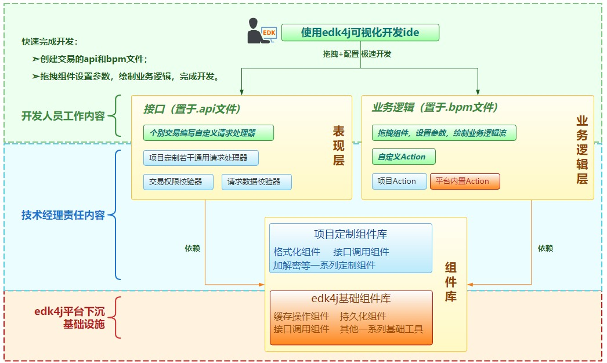

根据 Gartner 研究报告，将低代码开发技术分成三个主要市场领域：低代码应用平台（ LCAP ）、多功能体验开发平台（ MXDP ）、流程和业务规则 / 决策管理系统。
edk4j开发平台属于“低代码应用平台（ LCAP ）”。
低代码应用平台是指一种通过零代码或者最小化手工代码量快速设计和生成应用的平台。
通过可视化的开发界面，以拖放机制，帮助开发人员和公民开发人员快速构建应用程序，实现业务需求。
低代码应用平台与传统文本开发模式最大的不同就是利用各种可视化方法，通过拖拉拽的方式快速构建应用。
以模型和元数据为中心，丰富的功能组件，组装式开发。
支持业务代码和通用逻辑开发的模板化，以及自定义编码扩展功能。
：客户端与服务端的任何一次交互，都视为“一个交易”。
任何一个交易都至少有“交易码”、“访问地址”以及“交易名称”属性。“交易码”是交易的id，是系统中对交易的唯一标识。
：一次交易过程的模型，包括：请求视图、请求数据、逻辑处理模块、答复数据、答复视图等。
：请求层的配置构件，是由交易的“接口（服务）地址”、“权限控制设置”、“检验规则”、“目标业务逻辑”、“请求数据解包器”等一组视图层配置组成。
：业务逻辑层的配置构建，bpm即Business Process Manage的简写，在本平台中特指“业务的处理流程管理单元，其中包括：数据域定义、输入输出定义、业务逻辑流”。
：业务逻辑的处理流程图，对应于传统开发模式中的“service实现类”。
：具有“通用性”、“复用性”的逻辑功能单元，包括：“接口实现类”、“业务逻辑Action”、“通用工具类”、“通用功能模块”等。
：最小业务逻辑执行单元，一个业务逻辑流中的每个步骤就是一个Action。
：将组件分类归纳，构成“组件库”。

使用本平台，开发者在开发过程中的工作内容为：零编码或少量编码Java代码，专注于业务的api和bpm配置文件，使用配套的可视化开发IDE以拖拽、绘图的方式完成开发，从而实现“低代码”。开发思路和内容一般会包括：
- 按功能层面进行边界划分，本平台将系统划分为：“视图层（api）”、“业务逻辑层（BPM）”、“基础组件层（组件库）”；
- 本平台对各个层面的各功能点的Java代码实现进行提炼，以“接口”的方式开放到开发层面，遵从“开放闭合原则”：封装必要的细节，预制默认逻辑从而使开发人员需要编写的Java代码量最小化；
- 视图以api配置文件的方式进行开发；
- 业务逻辑以bpm配置文件的方式进行开发；
- 对于系统参数、业务参数，可配置于指定文件中，也可配置于数据库等持久化库中；
-
平台中定制“业务逻辑执行单元”接口，并预制一批实现了改接口的、具有通用性、复用性的开发组件类；
允许具体项目中实现该接口来开发个性化组件。预制组件和个性化组件，构成“业务逻辑执行单元组件库”；
- “统一开放接口”、“业务逻辑执行单元组件库”、“工具代码包”共同构成“基础组件库”；
-
开发可视化开发IDE，把原本需要通过手工编写配置文件的开发方式，
转变为通过拖拽、组合调用功能组件的方式来开发，通过更直观、对人更直觉化的方式进行呈现和配置。
使“开发业务逻辑”与“绘制业务流程图”一般便捷，拖拽设计好流程图，并配置属性后，开发即完成，真正的“设计即开发”。
“软编码开发方式”将开发人员从手工锻打Java代码的工作中释放，
而“可视化开发IDE”会将开发人员从手工编写配置文件的工作中释放，进一步大幅度减少开发人员的编码量，是本平台的开发利器 。